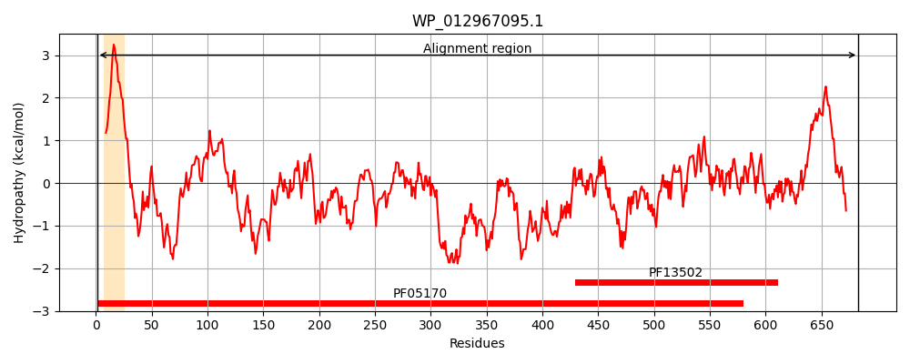
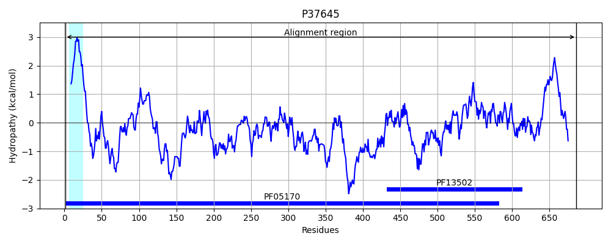
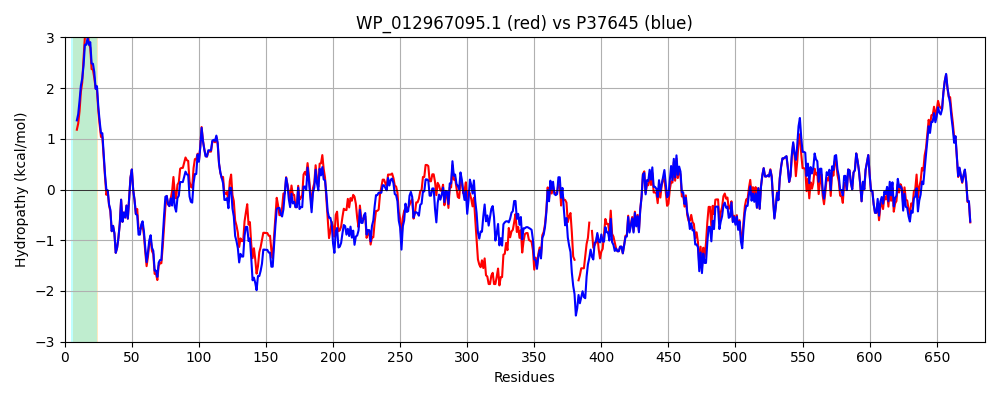

Hit Accession: P37645
Hit TCID: 9.B.121.1.1
Hit Description: gnl|BL_ORD_ID|10119 gnl|TC-DB|P37645|9.B.121.1.1 Uncharacterized protein yhjG OS=Escherichia coli (strain K12) GN=yhjG PE=4 SV=3
Mach Len: 686
e:0.000000
Query TMS Count : 1
Hit TMS Count: 1
TMS-Overlap Score: 0.950000
Predicted Substrates:None
BLAST Alignment:
Score: 2821 , Bit scores: 1091 bits, E-value: 0.0e+00, Alignment length: 686, Percentage identity: 77
Query: 1 MSRTRKTLVIITGTILLLIVLFFIVLATFDWNRLKPTINQKVSAELNRPFAIRGDLGVVWERQPDERGWRSWIPWPHVHAEDIVLGNPPAIPQVTMIHLPRVEATLAPLALLSKTVYLPWIKLEQPDVRLIRLAEDNNNWTFQLAGDQRTSGDSAPSSWSFRLDNILFDRGTIAIDDKITRSDITILVDPLGKPLPFSEVTGTKDQHSAAKVGDYVFGLSLKGRYKDQPVTGNGKIGGMLALRSASTPFPLQGDFHSGNTRVAFSGTVSDPLNVGGIDLRLKFAGDSLRDLYDLTGVLLPETPSFSTDGRLRADFKQKNRMRFDYQDFNGRIGDSDIHGSLTYTTGKPRPKLSGDMESKQLRLADLGPLIGVDSGKGTKKG--AARQAGDRP-QPAGKVLPADRFETDKWQVMDADVRFKGRRIEHGGTLPISDLSTHVILEDGDLRLQPVRFGLANGSIAGSVHLQGDKKPLQGEANLQARRLKLKALMPNVEMMQKTLGEMNGDVQLRGSGNSVAALLGNSNGNLKLLMNDGLISRNLMEILGLNVGNYLIGQIFGDEEVRVNCAAANIDVTNGVARPQIFAFDTENALINVTGTASFASEQLDLTIDPESKGFRVITLRSPLYVRGTFKSPQAGVKAGPLIVRGAVAAALATLVTPAAALLALVSPAEGDSNQCRTILSQMKK 683
MS+ K I+G LLLIV+ I++ATFDWNRLKPTINQKVSAELNRPFAIRGDLGVVWERQ E GWRSW+PWPHVHAEDI+LGNPP IP+VTM+HLPRVEATLAPLALL+KTV+LPWIKLE+PD RLIRL+E NNNWTF LA D ++ PS+WSFRLDNILFD+G IAIDDK++++D+ I VDPLGKPLPFSEVTG+K + KVGDYVFGL +GRY +P+TG GKIGGMLALR TPFP+Q DF SGNTRVAF G V+DP+ +GG+DLRLKF+GDSL DLY+LTGVLLP+TP F TDGRL A + FDY+ FNGRIGDSDIHGSL YTTGKPRPKL GD+ES+QLRLADLGPLIGVDSGKG +K + ++ G++ QPAGKVLP DRFETDKW VMDADVRFKGRRIEHG +LPISDLSTH+IL++ DLRLQP++FG+A GSIA ++HL+GDKKP+QG A++QARRLKLK LMP+VE+MQKTLGEMNGD +LRGSGNSVAALLGNSNGNLKLLMNDGL+SRNLMEI+GLNVGNY++G IFGD+EVRVNCAAAN+++ NGVARPQIFAFDTENALINVTGTASFASEQLDLTIDPESKG R+ITLRSPLYVRGTFK+PQAGVKAGPLI RGAVAAALATLVTPAAALLAL+SP+EG++NQCRTILSQMKK
Sbjct: 1 MSKAGKITAAISGAFLLLIVVAIILIATFDWNRLKPTINQKVSAELNRPFAIRGDLGVVWERQKQETGWRSWVPWPHVHAEDIILGNPPDIPEVTMVHLPRVEATLAPLALLTKTVWLPWIKLEKPDARLIRLSEKNNNWTFNLANDDNKDANAKPSAWSFRLDNILFDQGRIAIDDKVSKADLEIFVDPLGKPLPFSEVTGSKGKADKEKVGDYVFGLKAQGRYNGEPLTGTGKIGGMLALRGEGTPFPVQADFRSGNTRVAFDGVVNDPMKMGGVDLRLKFSGDSLGDLYELTGVLLPDTPPFETDGRLVAKIDTEKSSVFDYRGFNGRIGDSDIHGSLVYTTGKPRPKLEGDVESRQLRLADLGPLIGVDSGKGAEKSKRSEQKKGEKSVQPAGKVLPYDRFETDKWDVMDADVRFKGRRIEHGSSLPISDLSTHIILKNADLRLQPLKFGMAGGSIAANIHLEGDKKPMQGRADIQARRLKLKELMPDVELMQKTLGEMNGDAELRGSGNSVAALLGNSNGNLKLLMNDGLVSRNLMEIVGLNVGNYIVGAIFGDDEVRVNCAAANLNIANGVARPQIFAFDTENALINVTGTASFASEQLDLTIDPESKGIRIITLRSPLYVRGTFKNPQAGVKAGPLIARGAVAAALATLVTPAAALLALISPSEGEANQCRTILSQMKK 686 | Protein Hydropathy Plots: |
|---|
|  |  |
Pairwise Alignment-Hydropathy Plot:
|
|---|
|  |